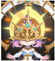

メニュー
韓国 2019/7/29アップデート
[重要！] 韓国公式の情報を基にしています。
誤訳や韓国独自仕様の可能性もありますので、予めご了承下さい。
メイド バランスパッチ
マスケッティア/アルケミスト覚醒
クリーチャーシステム追加・変更
秘密ダンジョン追加・改修
新狩場
ミッションブック Season2
新規DXU追加

メイド バランスパッチ
こちら にて実装日時点(2019/7/29)での変更内容をまとめます。
マスケッティア/アルケミスト覚醒
こちら にて実装日時点(2019/7/29)での変更内容をまとめます。
※同タイミングでマスケッティア・アルケミストのスキルに調整が入っています。
クリーチャーシステム追加・変更

新規クリーチャーが9種類追加されます。
| 名前 | 評価 | タイプ | メインスキル | メインパッシブ | サブパッシブ1 | サブパッシブ2 |
|---|---|---|---|---|---|---|
| アスター | R | 力 |
リーフカッター- 力 ？％の確率で力？％ほどのダメージ |
受信した魔法ダメージ吸収 | 大地の低下 | 攻撃力 |
| アスター | R | 知識 |
リーフカッター- 知識 ？％の確率で知識？％ほどのダメージ |
防御力 | 風強化 | 受けたダメージCP に変換 |
| ウースター | R | 健康 |
リーフカッター- 健康 ？％の確率で健康？％ほどのダメージ |
光強化 | 動物型ダメージ | 移動速度 |
| イースター | R | サポート | 召喚獣＆ペットすべてのステータス | 回避率 | クリティカルダメージ減少 | |
| メラニー | HR | サポート | - | 召喚獣＆ペット強化 | 召喚獣＆ペットすべてのステータス | 最大CP |
| カイザー | HR | 知識 |
時間の咆哮 ？の確率で知識？％ほどのダメージ+ 相手のメインクリーチャースキル1 ターン封印 |
スキル | 上級状態異常耐性 | 魔法致命打 |
| トワイライト | SR | 力 |
夕暮れ 20％の確率で力？％+ 健康？％のダメージ |
魔法強打 | PVP 防御力 | 上級最大CP |
|
ラクネラ (修正) |
SR | 知識 |
静かなささやき ？％の確率で知識？％ほどのダメージ+ 味方クリーチャーの知識を3 ターンの間？％増加させる。 |
ヒューマノイド魔法ダメージ | 魔法致命打 | 水強化 |
| ハーモニー | LR | サポート | - | 処理された魔法ダメージ吸収 | 魔法攻撃力の低下 | 上級スキル |
※一部のクリーチャーは実装前時点でも図鑑から確認できます。
例：ハーモニー

秘密ダンジョン追加・改修
変更点
[ヴァンパイアキングダム]- 入場制限が680以上に変更されます。(既存は681)
- 秘密モンスターから獲得できる経験値が上昇します。
- 1階層で出現するジャグ(魔法無効mob)を出現しないように変更。
- 本秘密で新規DXユニーク(威風堂々)を獲得できるようになります。
[放棄された地下監獄]
- 新規DXユニーク(仮面舞踏会、おぼろげな香水)を獲得できるようになります。
[崩壊した地下遺跡]
- 新規DXユニーク(束縛された不死、高潔な生活)を獲得できるようになります。
[逃亡者たちの山]
- 新規DXユニーク(追跡者の忍耐、ループの努力)を獲得できるようになります。
新規追加
2つの秘密ダンジョンが追加されます。[タールスの古代の墓]
ストーリー：忘れられた英雄タールスの古代の墓を発見した2人の探検家は、けがをした探検家を救出しなければならない。
フィールド：ブラックファイヤー洞窟(257,8)
レベル： 800レベル～
その他：タールスの古代の墓から新規DXユニーク(タールスの報復、汚れた生活)を獲得できます。
[インプの宝庫]
ストーリー：森のインプが隠した宝物倉庫
フィールド：生命の森の中心部(新規ダンジョン) (178.168、80.188、71.6、13.123)(座標オブジェクトを介して移動)
レベル： 1000レベル～
その他：インプの宝庫から新規DXユニーク(元素のラリー)を獲得できます。
[参考韓国動画]
タールスの古代の墓(타르타스의 고대무덤)より。
新狩場
新狩場が4つ追加されます。| フィールド名 | レベル | 接続フィールド |
|---|---|---|
| 神獣の野原 | 935〜965 | 大きな山ハヌ、生命の森の中心部 |
| 生命の森の中心部 | 1030〜1065 | 神獣の野原、枯渇された生命の森 |
| 枯渇された生命の森 | 1145〜1180 | 生命の森の中心部、死の荒野 |
| 死の荒野 | 1200〜1250 | 枯渇された生命の森 |
[参考 韓国動画]死の荒野より。
ミッションブック Season2
- ミッションブックとは、REDSTONEのシステムを活かした様々なミッションをクリアすることでステータス増加などの報酬を得られるシステムです。
- ミッションブッククリア時すべてのステータス増加、最大HPなど増加を提供しています。
- ミッションブックシーズン2は6章・76個のミッションから構成されています。
新規DXU追加
今回追加されるDXUは特定の秘密ダンジョン(主に680以降)で限定入手可能なものとなります。| アイテム名 | 着用レベル | 要求能力値 | 基礎情報 | ベースのオプション | Nx解放オプション | 備考 |
|---|---|---|---|---|---|---|
| タールスの報復[Nx] | 600 | 力3000 | 防御力14 増加 |
着るダメージ30％増加 ダメージ70％増加 クリティカルダメージ30％増加 クリティカル確率20％増加 攻撃速度40％減少 |
アイテム着用ステータス要求500 の減少 スキルレベル2 増加 攻撃速度20％増加 ダブルクリティカルダメージ10％増加 |
手袋 |
| 仮面舞踏会[Nx] | 600 | カリスマ500 |
防御力40 増加クリティカル抵抗20〜25 増加 |
すべての属性攻撃抵抗35％ のすべての異常攻撃抵抗35％ 、最大HP40％増加、魔法攻撃力15％減少知識100 の減少 |
アイテム着用ステータス要求100 の減少防御力25 増加レベルごとに健康1/5 増加能力値の低下3％防止 |
投球 |
| 束縛された不死[Nx] | 600 | 知識3000 |
魔法攻撃力40％増加、魔法致命打10％減少、着用者が着用する魔法ダメージ10％増加、すべての魔法属性ダメージの10％を吸収して、体力的に作る知識レベルごとに3分の1
増加 |
アイテム着用ステータス要求500 の減少知恵100 増加CP獲得時10％のCP ボーナス最終ダメージ2％増加 |
イヤリング | |
| かすかな香り[Nx] | 600 |
敏捷350 知恵350 |
防御力61〜70 増加 |
防御力120％増加、最大HP50％増加移動速度20％減少、すべてのステータス100 の減少シンスヒョンに覆われたダメージの10％増加 |
アイテム着用ステータス要求100 の減少防御力60％増加運100
増加、自分に加わるダメージ絶対値5％減少 |
鎧 |
| 追撃者粘り[Nx] | 600 | 敏捷400 |
防御力14〜20 増加ノクベク抵抗60〜80 増加 |
1 分ごとに最大HPの20％シールド生成 1分ごとにクリティカル被撃の時、自分の最大HPの30％に相当する保護膜生成健康200 の減少移動速度30％増加 |
アイテム着用ステータス要求100 の減少敏捷性140 増加歩くときティックダングCP をティックダング20 ほど回復ダブルクリティカルダメージ10％増加 |
ブーツ |
| 汚れた生活[Nx] | 600 | 健康500 |
クリティカル抵抗40％増加決定打抵抗40％増加即死抵抗50％増加 |
ペット、召喚獣最大HPの20％増加、ペット、召喚獣の攻撃速度20％増加、ペット、召喚獣の状態異常抵抗20％増加すべてのステータス70
増加ペット、召喚獣が20％の確率でコマンドを無視 |
アイテム着用ステータス要求100 の減少、健康100 増加ペット、召喚獣のすべてのステータス300 に増加すべてのスキルレベル3 に増加 |
ネックレス |
| 高潔な生活[Nx] | 600 | 運500 |
防御力12〜13 増加すべての状態の抵抗25％増加 |
光ダメージスキルクリティカル確率5％増加、光ダメージ50％増加、ターゲットの光抵抗40％低減ターゲットに1〜600 の光ダメージ着用者の体力が10 秒ごとに100
ずつ減る。 |
アイテム着用ステータス要求100 の減少知識150 増加すべてのスキルレベル2 増加5％の確率で魔法ダメージの5％を体力的に吸収 |
管 |
| ループの努力[Nx] | 600 |
力400 の知識400 |
防御力9〜12 増加ベルトスタックアイテム数10 個 |
スキルレベル3 に増加人間型に覆われたダメージの15％増加人間型追加ダメージ7％の抵抗の健康150 増加着るダブルクリティカルダメージ5％減少 |
アイテム着用ステータス要求100 の減少、健康140 増加攻撃速度10％増加最大スタミナ800 増加 |
ベルト |
| 威風堂々[Nx] | 600 | カリスマ400 |
闇抵抗80％増加、光抵抗80％低減 |
ダメージ40％増加攻撃速度35％増加攻撃が成功すると、処理されたダメージの3％を吸収する。CP 獲得時10％のボーナスを得る。10％の確率でチャーミング攻撃が発動して1
秒間持続する。 |
アイテム着用ステータス要求100 の減少、最大HPの40％増加CP獲得時10％CP
ボーナスダブルクリティカルダメージ10％増加 |
マント |
| アイテム名 | 着用レベル | 要求能力値 | 基礎情報 | ベースのオプション | Nx解放オプション | 備考 |
|---|---|---|---|---|---|---|
| 元素のラリー- 火[Nx] | 600 | 健康400 | 火抵抗5〜8％増加 |
最大HP10 増加 火属性ダメージ100〜200 ターゲットの火属性低下4％ 知識+15 増加 火属性クリティカル確率1％増加 |
着用ステータス要求 - 100 知識+20 増加 魔法致命打確率1％増加 すべてのスキルレベル1 増加 |
リング |
| 元素のラリー- 水[Nx] | 600 | 健康400 | 水の抵抗5〜8％増加 |
最大HP10 増加水属性ダメージ100〜130 を与え、3 frame 間凍る。ターゲットの水属性低下3％増加の知識15
増加水属性クリティカル確率1％増加 |
アイテム着用ステータス要求100 の減少知識20 増加魔法致命打確率1％増加すべてのスキルレベル1 増加 |
リング |
| 元素のラリー- 風[Nx] | 600 | 健康400 | 風の抵抗5〜8％増加 |
最大HP10 増加風属性ダメージ100〜130 を与え、3 frame 間スタンさせる。ターゲットの風属性低下4％増加の知識15
増加風属性クリティカル確率1％増加 |
アイテム着用ステータス要求100 の減少知識20 増加魔法致命打確率1％増加すべてのスキルレベル1 増加 |
リング |
| 元素のラリー- 大地[Nx] | 600 | 健康400 | 抵抗5〜8％増加 |
最大HP10 増加対象に3 秒間、毎秒70〜90 の毒ダメージを与える。ターゲットの大地属性低下4％増加の知識15
増加大地属性クリティカル確率1％増加 |
アイテム着用ステータス要求100 の減少知識20 増加魔法致命打確率1％増加すべてのスキルレベル1 増加 |
リング |
| 元素のラリー- 光[Nx] | 600 | 健康400 | 光抵抗5〜8％増加 |
最大HP10 増加、光属性ダメージを100〜130 を着せ2 秒間命中、回避低下状態にする。ターゲットの光属性低下4％増加の知識15
増加光属性クリティカル確率1％増加 |
アイテム着用ステータス要求100 の減少知識20 増加魔法致命打確率1％増加すべてのスキルレベル1 増加 |
リング |
| 元素のラリー- 闇[Nx] | 600 | 健康400 | 闇抵抗5〜8％増加 |
最大HP10 増加闇属性のダメージを100〜130 を着せ3 秒間呪いをかける。ターゲットの闇属性低下4％増加の知識15
増加闇属性クリティカル確率1％増加 |
アイテム着用ステータス要求100 の減少知識20 増加魔法致命打確率1％増加すべてのスキルレベル1 増加 |
リング |
以上です。